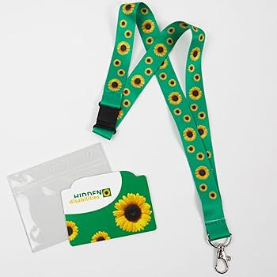

C'est quoi l'endométriose ?
L'endométriose n'est pas seulement le fait d'avoir des règles douloureuses pendant quelques jours.
Ça peut, mais c'est très important de ne pas résumer
l’endométriose à ça pour ne pas renforcer l’incompréhension et l’errance médicale. Cette maladie s'exprime différemment
dans chaque corps, par son emplacement, ses types de lésions, l'environnement, et par les réactions du corps.
Les lésions d’endométriose, c’est le nom qu’on donne
aux endroits où des cellules semblables à l’endomètre se sont implantées.
Ces tissus réagissent aux hormones du cycle menstruel, prolifèrent, et
par la suite peuvent créer de l’inflammation, des douleurs et tout le tralala.
Le nombre ou la taille des lésions d'endométriose ne représente pas la quantité de douleur,
on peut avoir des petites lésions et avoir très mal.
Les lésions d'endométriose peuvent aller dans beaucoup d'endroits.
Ce n’est pas une maladie uniquement présente dans l’utérus, dans de nombreux cas elle est présente dans le système pelvien,
mais il y a aussi des cas d’endométriose dans beaucoup d’organes, on commence à peine à diagnostiquer ça.
De plus en plus d'études qualifient l'endométriose de maladie systémique :
" Endometriosis is a chronic systemic disease: clinical challenges and novel innovations".
Dans une interview par Zélia Breton de Dr Erick Petit, il dit :
« Un jour j’ai rencontré une femme qui avait uniquement des douleurs de l’épaule droite pendant ses règles. Elle était venue me voir
car elle avait vu un reportage télé, et je lui ai trouvé une endométriose colossale. Seulement à part l’épaule, elle n’avait pas d’autres symptômes. ».
L’endométriose peut venir entraîner d’autres problèmes, que ce soit des adhérences entre les organes et une perte de mobilité de ces derniers, une hypertonie,
une hypersensorialité, et bien plus encore. Ce n’est pas seulement avoir des règles douloureuses parce que les symptômes
provoqués par l’endométriose peuvent être présents en dehors des règles, devenir chroniques, et affecter le fonctionnement de plusieurs organes.
C'est une maladie complexe, dont l'origine n'est pas encore clairement définie, et les mécanismes ne sont pas encore compris.
Avoir une endométriose peut être synonyme de handicap invisible, provoquant par exemple des douleurs aux lombaires, pendant
la digestion, des difficultés à marcher etc. Elles sont effectivement plus prononcées pendant les règles mais affectent
le corps dans son intégralité et pas seulement à ce moment précis.
Cette maladie est sous-estimée par beaucoup de professionnels de la santé et en général pas prise au sérieux.
"The etiquette of endometriosis: Stigmatisation, menstrual concealment and the diagnostic delay"
Obtenir un diagnostic met en moyenne sept à dix ans et coûte cher.
La recherche a commencé très récemment et on découvre de plus en plus de choses.
Aussi, l’endométriose est souvent présentée comme une maladie qui toucherait uniquement les femmes,
ce qui invisibilise les hommes trans et les personnes non-binaires concernées par cette maladie.
En bonus, 16 cas d'endométrioses ont été documentées chez des hommes cisgenres, depuis cette découverte il y a
une blague assez récurrente sur les réseaux qui dit qu'il va enfin y avoir de la recherche efficace et des financements puisque
des hommes cis sont atteints.
Comprendre les mécanismes de nos douleurs
Essayer de comprendre le fonctionnement de mes douleurs m'a permis
de mieux cibler mes actions et de comprendre pourquoi certaines choses étaient efficaces et d'autres non.
La première chose que j'ai apprise, grâce aux kinésithérapeutes qui m'ont suivie, était le fonctionnement du plancher pelvien.
C'est un ensemble de muscles qui vient maintenir beaucoup d'organes comme la vessie, le rectum, l'utérus...
Je ne vais pas faire de grand paragraphe dessus, je pense que le mieux est d'aller voir un•e•x kinésithérapeute.

Il faut prendre en compte qu'on ne comprend toujours pas l'entièreté de ces mécanismes,
j'en vulgarise certains, en essayant de retransmettre le peu qu'on sait.
L'inflammation
Un des mécanismes importants à connaître quand on a des douleurs pelviennes est l’inflammation. L’inflammation est une réaction du système immunitaire pour se défendre, dans le cas de l’endométriose elle peut être déclenché par des nodules ou par un/des kystes, etc. Les règles impliquent un processus inflammatoire naturel, qui peut être amplifié dans certaines pathologies comme l’endométriose.L'inflammation provoque des gonflements, de la chaleur, et autres péripéties. Subie pendant longtemps elle peut inflammer les nerfs et les irriter, augmenter leur sensibilité, et même les endommager. Elle peut également provoquer des adhérences entre les organes et une perte de mobilité de ces derniers.
Les douleurs neuropathiques et le système nerveux
L'irritation et compression des petits nerfs causée par l'endométriose et l'inflammation participe aux douleurs les moins compréhensibles.Plus des douleurs sont présentes, plus le seuil de tolérance à la douleur diminue. Les nerfs deviennent plus sensibles et envoient des signaux de douleur même sans mouvement.
Quand un nerf est sollicité pendant longtemps lors de douleurs chroniques, on peut avoir une sensibilisation centrale où le système nerveux devient hypersensible. Le cerveau apprend la douleur quotidienne et, même quand les stimuli ne sont pas présents ou sont moindres, il perçoit un signal de douleur.
On peut ressentir des sensations de brûlures, des décharges électriques, des picotements ou encore des engourdissements. Ces douleurs ne peuvent pas partir avec un antalgique sauf si on compte sur un effet placebo.
On a aussi appris que des fibres nerveuses ont été retrouvé dans et autour des lésions d'endométriose :
Role of interleukin-1β in nerve growth factor expression, neurogenesis and deep dyspareunia in endometriosis .
L'Endobelly
Sensation de ballonnement, de ventre dur, visiblement gonflé et très inconfortable, voire douloureux. Peut apparaître à n'importe quel moment du cycle et de la journée.C’est fun parce qu’avec le manque de recherche des nouveaux termes sont créés ou adoptés des réseaux sociaux et du coup sont assez cute contrairement au jargon médical.
C'est un des symptômes les plus visibles de l'endométriose mais dont on connaît le moins l'origine.
L'immobilité tissulaire
La douleur dans le bassin peut provoquer une sorte de blocage dans les tissus, comme s’ils perdaient en mobilité. À cause de la douleur, le corps se crispe et on bouge moins. Mais le fait d'être immobile et tendu finit par créer encore plus de douleur.Un cercle vicieux s’installe : la douleur entraîne moins de mouvement, et le manque de mouvement entretient la douleur. C'est aussi comme ça qu'on peut être en état de protection musculaire chronique et si ça s'installe en hypertonie Tension excessive et involontaire des muscles du plancher pelvien. Les muscles sont tendus ou rigides, entraînant des douleurs, de la fatigue. .
Les adhérences
Les adhérences sont des bandes de tissus cicatriciels. Elles se forment au moment où les lésions d'endométriose provoquent de l'inflammation et/ou des micro-saignements, ce qui peut être en même temps que les règles, mais aussi en dehors.Ce phénomène crée de l'inflammation, le corps tente de réparer ça et boum du tissu cicatriciel qui colle les organes entre eux. mince.
Les adhérences entraînent une perte de mobilité des organes qui, elle, entraîne des épaississements de certains organes ou ligaments. Utérus collé à la vessie ou au rectum par endroits ou entièrement, on sait pas trop ce qu'on a parce que les adhérences sont pas bien diagnostiquées, en tous cas ça crée une perte de mobilité.
L'oeuf ou la poule
Vous remarquerez peut-être! Que plusieurs cercles vicieux peuvent se créer, se rejoindre, se nourrir. Ma kiné utilise souvent l'expression l'oeuf ou la poule, on ne sait pas qui déclenche quoi et quel mécanisme entraîne lequel. Petit exemple :Les adhérences tirent sur les organes → épaississement des tissus → mobilité réduite → plus de douleur → encore plus d’adhérences possibles →
Il y a aussi un autre cycle dont je parle plus dans la prochaine case, douleur → stress/angoisse → douleur →
L'inflammation et les douleurs chroniques prennent beaucoup d'énergie au corps, le système immunitaire est constamment sollicité, occupé à gérer l’inflammation.
Ça veut dire qu'avoir une autre maladie en plus, même un rhume, est encore plus fatiguant et met plus de temps à disparaître. Un rhume, une chute, un choc vient perturber l'équilibre général et peut raviver certaines douleurs d'endométriose qui avaient diminué.
Comme on ne peut pas traiter l'endométriose, on essaie de traiter ses symptômes. Chacun demande une approche différente, d'où la nécessité d'apprendre leur existence pour tenter différentes solutions.
Concrètement, symptômes et causes possibles de ce que j'ai eu :
Sensation d'un bassin bloqué, rouillé, douleurs aux lombaires :→ Une perte de mobilité des organes qui a engendré des adhérences entre les parois des organes, un épaississement des ligaments utéros-sacrés et de l'inflammation.
Intolérances alimentaires, mauvaise digestion, douleurs lors de la défécation, envies constantes d'uriner :
→ Perte de mobilité encore, adhésions entre mes organes, mais aussi inflammation très facile à déclencher par certains aliments (peut être à cause de ma pilule progestative),
+ du stress et un mauvais sommeil.
Barre à l'arrière de la jambe, douleur sciatique, sensation de brûlure/déchirure, à chaque pas :
→ Inflammation chronique du nerf qui passe à côté de mes ligaments utéro-sacrés.
Ballonnements après avoir mangé, même juste en buvant de l'eau, ou même dès le réveil :
→ Gaz bloqués (aérophagie), intestins inflammés, manque de mobilité de mes organes à cause d'adhérences et d'épaississement.
Lourdeur, comme si mon ventre portait tout mon poids :
→ Adhérences de mes organes, et peut être un syndrome de congestion pelvienne à cause de varices pelviennes
Sensation de couteau enfoncé, en étant immobile ou pendant les selles :
→ Muscles du plancher pelvien en hypertonie, contractés presque en continu → Nerf(s) irrité(s) ou comprimé(s) → Douleur neuropathique.
Sensation de bleu à la vulve et autour, comme si ma culotte était faite de petites lames de rasoir :
→ Nerf(s) irrité(s) ou comprimé(s), muscles en hypertonie et hypersensibilité.
Autres symptômes
C'est possible d'avoir d'autres symptômes couramment comme des maux de tête, des nausées, et d'autres.Il y a aussi des symptômes encore plus surprenant et moins courants, par exemple des saignements du nombril.
Si tu veux être au courant d'études récentes je conseille ces deux sites :
https://www.endonews.com
https://www.fondation-endometriose.org
Le lien entre douleur et psychologie
Le cercle vicieux de la douleur est une réaction de stress face à la douleur,
on a mal et on réagit par du stress, on peut en plus de ça stresser que la douleur empire,
avec le stress les muscles viennent se contracter et la respiration se coupe, ce qui mène à une douleur plus présente.
Face à la douleur qui monte, le stress monte lui aussi, et on rentre dans un cercle vicieux.
Ce mécanisme prend place dans notre quotidien en petite dose, mais aussi sur le long terme.
La douleur peut être facilement empirée par la façon dont on y réagit, et par notre état psychologique.
Severe pelvic pain is associated with sexual abuse experienced during childhood and/or adolescence irrespective of the presence of endometriosis
Le but d'origine de cette étude était de chercher un lien entre des traumatismes sexuels dans l'enfance et l'endométriose, ça n'a pas été prouvé, par contre elle a prouvé que
les expériences traumatiques diminuent généralement la tolérance à la douleur et que les personnes ayant subi des traumatismes durant la petite enfance et/ou
des traumatismes répétés sont plus susceptibles de développer des douleurs pelviennes.
« […]a previous history of sexual abuse
during childhood and/or adolescence
was associated with the presence of
severe pelvic pain symptoms. »
En quoi le stress empire le signal de douleur ?
Dans cette autre étude des tests d'endométriose sur des souris ont démontré que l'endométriose induit une sensibilisation à la douleur, à l'anxiété et à la dépression. Endometriosis alters brain electrophysiology, gene expression and increases pain sensitization, anxiety, and depression in female mice
L’étude parle de sensibilisation centrale, c'est quand le système nerveux devient plus réactif et que le seuil de la douleur diminue, provoquant des signaux de douleur amplifiés.
Le corps ressent plus fort et plus longtemps, avec des douleurs chroniques cette sensibilisation peut continuer même quand la cause physique n’est plus là et devenir des douleurs neuropathiques.
What Is Behind? Impact of Pelvic Pain on Perceived Stress and Inflammatory Markers in Women with Deep Endometriosis
« […] in women with deep endometriosis,
the exacerbation of pain symptoms
is closely linked to elevated stress
and inflammatory markers. »
Pour la route, une dernière étude qui montre les liens entre endométriose, anxiété et stress
Ces études ne sont en aucun cas des raisons pour les médecins de ne pas nous prendre au sérieux, ou de nous dire que nos douleurs sont dans notre tête comme si cette affirmation allait les faire disparaître.
Les études inutiles sur l'endométriose
L'endométriose est une maladie qui existe depuis très longtemps mais qui fait l'objet de véritables recherches depuis très peu de temps.Pour comprendre à quel point les études autour de l'endométriose prennent du temps, ça me paraît nécessaire de mentionner ces quelques études qui ont eu lieu très récemment :
En 2013 cette étude absurde et sexiste est sortie : "Attractiveness of women with rectovaginal endometriosis: a case-control study"
Cette étude aboutit sur l'information très peu utile que les femmes qui ont des endométriodes rectovaginales sont plus attirantes que la moyenne, avec une silouette plus fine et une poitrine plus avantageuse.
youpi.
Elle a été conduite sur des patientes qui venaient pour des opérations, elles ont été notées sur 10 en fonction de leur attractivité. Le pire est qu'elles n'ont pas été prévenue du sujet de l'étude, les médecins leurs ont dit que des critères physiques rentreraient en compte, mais pas que le but était de savoir à quel point elles étaient attirantes.
Le plus drôle c'est que sept ans après, elle a été retirée et qu'un paragraphe d'explication a été publié disant :
" This article has been retracted at the request of the Authors. The entire group of investigators contributing to this study requests to withdraw this article.
We conducted the study in good faith and according to correct methodology. We believe that our findings have been partly misinterpreted, but at the same time realize that the article may have caused distress to some people. Women's respect is a priority for us and we are extremely sorry for the discontent the publication originated. "
Je trouve ce paragraphe très drôle parce qu'il explique qu'ils ont fait ça avec "de bonnes intentions" avec une "méthodologie correcte" et qu'ils pensent que ça a été "partiellement mal interprété".
Pour moi les excuses qu'on trouve à la fin sont absurdes, parce qu'ils disent être désolés des réactions que ça a provoqué. Ils ne sont pas désolé de leur démarche, ils ne sont pas désolés d'objectifier les personnes qui ont de l'endométriose, ils ne sont pas désolés d'avoir utilisé de l'argent pour faire une étude entièrement inutile.
Je ne comprends pas comment cette étude a pu être mise en place et publiée sans être remise en question plus tôt. Le fait qu'elle ait été retirée est très probablement liée à la fureur qu'elle a engendrée sur les réseaux sociaux.
Une autre étude, pas très utile :
"A qualitative study of the impact of endometriosis on male partners"
Petite citation "[...] male partners having a marginalized status in endometriosis care" en tant que patient•e•x on est déjà marginalisée, pourquoi aller chercher midi à quatorze heures ? La grande partie de cette étude est centrée autour de la vie sexuelle et l'envie d'avoir des enfants, ce qui, pour une personne qui souffre au quotidien, n'est pas la priorité.
Bien sûr que c'est impactant dans une relation de vivre avec quelqu'un qui est malade, et en lisant les témoignages, ça a effectivement l'air difficile, mais pour l'endométriose qui n'a pas assez de recherche c'est juste très peu utile d'avoir ce genre d'articles financés.
En 2021 il y avait moins de 20 études randomisées concernant l'endométriose.
L'histoire de l'endométriose
Ici je parle de l’histoire de l’endométriose !
C’est la version longue, il ne s’est juste pas passé grand-chose niveau découverte scientifique utile.
L’endométriose a été pour la première fois décrite dans l’Égypte Antique en -1855.
Et puis bam le Moyen Âge et la renaissance : mais non, voyons ! C’est de la possession démoniaque !
Elle a été ensuite incorporée à la « psyché féminine » et c’est là que la maladie de l'hystérique a été inventé.
Pour rappel le terme hystérique aujourd’hui est défini comme un comportement déchaîné, incontrôlable.
Il a été créé à partir du mot "hystera" en grec ancien qui voulait dire utérus, et du mot "hysterikos" toujours en grec ancien qui voulait dire lié à l'utérus.
Il a été utilisé pour parler de « névroses hystériques »
et servait à discréditer les femmes, leurs émotions et les douleurs qu’elles rencontraient.
Son histoire reste un noyau dans son utilisation et il est la plupart du temps utilisé pour parler d’une femme.
N’utilisons pas le terme hystérique !
Bref, le concept de l’hystérie est inventée, très utilisée, et toutes les recherches sur l’endométriose ont été foutues à la poubelle.
Jusqu’au 19e siècle où petit à petit la première définition de la maladie apparaît, on décrit que des cellules de l’endomètre
ne sont plus à leur place et vont se greffer en dehors de la cavité utérine.
Le terme endométriose voit le jour en 1927, mais jusqu’à 2010-2015 la recherche n'avance pas assez.
En conclusion, ça fait une dizaine d’années qu’il y a de la recherche sur une maladie qu’on connaît depuis 4000 ans,
et qui touche au moins une personne assignée femme à la naissance sur 10.
En comprenant qu'il y a si peu de recherches sur l'endométriose on comprend mieux l'errance médicale, les délais de diagnostics,
le manque de prise en charge, et la normalisation des règles douloureuses.
Aujourd'hui
Il n'existe pas d'accord international sur un système de catégorisation de l'endométriose. Pour l'instant, en France, l'endométriose est classée en trois catégories :Superficielle
Profonde
Ovarienne
Elle peut être ensuite précisée (en fonction de l'envie du médecin) en différents stades selon l'étendue, allant de I à IV. Il faut prendre en compte que ces classifications sont souvent approximatives parce que c'est difficile de bien voir l'endométriose.
Étant basées sur l'anatomie, comme vu précédemment, ces catégorisations n'indiquent en aucun cas le niveau de douleur qu'on ressent ou les symptômes qu'on a.
J'ai vu récemment qu'aux États-Unis l'endométriose commençait à être diagnostiquée seulement avec les symptômes, et surtout qu'il y a une recherche d'une nouvelle classification de l'endométriose, qui prendrait en compte les symptômes, et les conséquences sur la qualité de vie, plutôt que seulement par l'emplacement des lésions.
Pour dire à quel point l'emplacement des lésions n'est pas utile, mes kinés et les médecins de la douleur que j'ai vus m'ont dit que savoir où était mes lésions ne changeait pas le suivi, parce qu'iels se basent sur mes symptômes.
De plus, avoir un nouveau classement permettrait de cibler les "traitements". Comme expliqué dans cette étude "A Novel Classification of Endometriosis Based on Clusters of Comorbidities"
"On observe fréquemment l'association de l'endométriose
à de nombreuses maladies, notamment certains types de cancers,
en particulier les cancers de l'ovaire et de l'endomètre.
Une connaissance approfondie des comorbidités peut contribuer
à mieux comprendre la complexité et la variabilité de l'endométriose,
facilitant ainsi un diagnostic plus précoce et précis et la mise en
place de traitements ciblés.
(extrait traduit de l'anglais au français)
Ces informations sont des bons débuts, bien qu'extrêmement tardifs, on attend encore et on en attend beaucoup plus, les recherches actuelles restent peu existantes, parfois inutiles comme vu précédemment, ou incomplètes.
Seulement 10 % des études en 2022 prenaient en compte les personnes racialisées, pendant longtemps l’endométriose a été pensée comme une maladie affectant seulement les femmes blanches.
Racial disparities in uterine fibroids and endometriosis: a systematic review and application of social, structural, and political context
Plusieurs études récentes montrent au contraire que les personnes noires et racialisées subissent davantage de retards diagnostiques, moins d’accès aux spécialistes et aux chirurgies mini-invasives, ainsi que plus de complications après les opérations.
Il existe des inégalités de traitement chirurgical de l’endométriose selon l’origine ethnique, avec davantage de chirurgies invasives et d’ablations d’organes chez les patientes non blanches, même après contrôle de facteurs médicaux.
Racial and ethnic disparities in surgical care for endometriosis across the United States
Cette étude montre que les patient•e•x non blanches ont plus de complications postopératoires que les patient•e•x blanches. Iels ont plus souvent des chirurgies réalisées par voie ouverte (laparotomie) plutôt que par laparoscopie qui est une technique moins invasive. Les patient•e•x hispaniques et noires ont aussi plus de chances de subir une ablation des ovaires.
Elles subissent des chirurgies plus invasives, plus d’ablations d’organes reproducteurs, et plus de complications post-opératoires que les femmes blanches qui ont des propositions de chirurgie mini-invasive.
Comment aider une personne en douleurs chroniques
Parfois mes amix m'ont dit se sentir dans l'incapacité de m'aider, ne pas savoir quoi faire face à la douleur.
Donc je fais cette liste de choses qui sont utiles, c'est axé endométriose mais je pense que c'est
en général de bons conseils pour être gentil avec une personne en douleurs chroniques :
Proposer des choses concrètes, au lieu de dire "tu veux quelque chose ?" proposer directement de la nourriture (voir nourriture anti-inflammatoire),
une tisane ou encore une bouillotte. Ça rend la proposition concrète et utile.
En crise de douleur le cerveau est trop occupé pour gérer une question large sur des besoins, alors que dire
oui ou non est plus simple.
Au delà d'aider une personne
qui n'aurait pas l'énergie
de se faire à manger,
c'est aussi un moyen
de dire je suis là pour toi,
et ça fait toujours
énormément de bien de
sentir accompagné•e•x.
Prendre en compte les différentes facettes de la douleur. La douleur peut être un simple mal de ventre, mais elle vient souvent avec d'autres complications, comme une hypersensibilité au bruit, à la lumière, parce que le cerveau est fatigué de gérer des douleurs chroniques.
Éviter d'empirer la situation. Si on a des douleurs chroniques une petite chose comme un rhume est pire, que ce soit sur les symptômes du rhume, les symptômes qu'on a de base, la durée de récupération... tout est pire. Apprenez à faire attention en général, et encore plus avec vos amix en douleurs chroniques.
Évitez aussi de nous transmettre du stress et de nous faire culpabiliser de notre fatigue.
Se renseigner. Se renseigner sur qu'est-ce-que-c'est-que-ce-truc qui fait que ton amix a mal tous les jours, c'est bien. Mais le plus utile, c'est de nous demander à nous ce que ça fait. Toutes les maladies sont différentes en fonction de la personne, demandez-nous ce qui aide, ce qui empire, etc. Pour éviter d'être dans une situation ou vous voulez aider mais ne pouvez pas par manque d'informations.
Pourquoi y a des tournesols mal détourés ?
Les tournesols sur fond vert sont
le symbole international du
handicap invisible,
si une personne a un handicap
invisible elle peut le porter sur
un cordon ou sur une carte
Ne pas participer à l'isolement social. Être en douleurs chroniques fait qu'on sort moins, parce qu'on a mal ou peur d'avoir mal, ça fait qu'annuler des sorties peut être récurrent. Essayez de ne pas faire culpabiliser la personne pour ça et, le plus important, de ne pas arrêter de l'inviter pour autant. C'est déjà chiant les moments qu'on rate à cause de nos douleurs, c'est encore plus triste de ne plus être invité parce que les dernières fois la douleur l'empêchait.
Ne pas laisser tomber parce que c'est pas pratique. On se sent déjà comme un boulet quand notre corps ne coopère pas avec nous, du coup se faire zapper par ses amix ça aide jamais.
Proposer du calme. Si la personne ne peut pas sortir dans un bar elle préfère peut-être plus rester chez elle ou en intérieur. Mais aussi, dans une situation où une personne souffre dehors, l'aider à trouver un endroit calme peut être très utile. Soit en trouvant un coin pas loin, soit en la raccompagnant chez elle, ou encore par des petites actions comme porter son sac qui peuvent avoir l'air de rien mais qui en réalité changent beaucoup.
Important! Ne laissez pas une personne
en crise seule dehors (sauf si elle le demande).
Ça peut être chiant de raccompagner quelqu'un à un certain moment ou d'annuler une sortie, mais c'est prendre à peine 5% du quotidien d'une personne en douleurs chroniques. Et quand quelqu'un reste, tout s'allège, on se sent moins seul•e•x dans son corps, moins isolé•e•x.
Je sais personnellement que si je suis en douleurs dans un bar et qu'on me propose de rentrer chez moi, ou dans un contexte safe, en petit comité, je me sentirais beaucoup moins perdue dans un monde inadapté à mes douleurs.
Bien sûr une des choses les plus importantes c'est de croire la personne quand iel parle de ses douleurs, de ne pas lui dire des choses inutiles comme "ça va aller" ou "t'as pas l'air handicapéx pourtant". Aussi, si quelqu'un vous dit qu'iel a un handicap invisible ce n'est pas une invitation à demander quel handicap.
Ne remettez pas en question nos handicaps et nos symptômes, ce n'est pas parce qu'un jour on peut courir qu'on peut courir tous les jours, ou même que quand on court c'est sans problème.
Aussi, si ton amix est en crise d'endométriose, tu peux lui lire la case en crise (lien) et l'aider à appliquer certains conseils.
Merci à mes amix handicap-friendly qui me surprennent à proposer des astuces et stratégies de groupe pour contrer l'endométriose < 3

L'endométriose est bien reconnue comme pouvant constituer un handicap invisible, même si c'est assez compliqué de faire toutes les démarches pour avoir les papiers officiels.

Témoignage chronologique de mes douleurs pelviennes
J’ai voulu plonger hors de mon corps
Le plus difficile n’était pas la douleur, ni l’énervement que ça me provoquait. Le plus difficile était la pataugeoire, être découragée, se prendre tellement de murs que la colère ne porte plus. Regarder ses jambes avec stupéfaction, sans comprendre comment en mettre une devant l’autre.
I. Diagnostic diagonal
Je n’arrive toujours pas à me souvenir quand est-ce que les douleurs ont commencé. En retrouvant mes bulletins de terminale je vois que j’étais bien plus absente au deuxième semestre qu’au premier « quatre journées non justifiées ». J’en déduis qu’à ce moment-là ça n’allait déjà pas.
Au bout d’un moment j’avais mal la plupart des jours, surtout au moment de dormir. Je me disais « c’est le stress de la prépa », je me disais que c’était normal. Je me considérais comme une personne qui n’avait pas mal pendant ses règles, que c’était comme ça, presque comme une fierté.
Je pense que cette fierté était due en grande partie aux réactions que je recevais quand j’exprimais une douleur « toi, tu as toujours mal quelque part », « c’est pas la peine de pleurer ». Je ne voulais pas en plus avoir à me plaindre d’une nouvelle chose tous les mois donc j’avais décidé que je n’aurais pas mal à cause de mon utérus.
Mes règles étaient douloureuses, un jour une fois sur deux, puis un jour à chaque fois, puis deux jours, puis plus. Mais je refusais.
« Si les médecins n’ont rien trouvé d’alarmant c’est qu’il n’y a pas de problème. »
Au bout de peut-être deux ans de maux de ventre récurrents, une médecin me dit que je suis probablement intolérante à quelque chose. Elle me recommande de ne pas manger de gluten pendant quelque temps, ou de lactose, sans m’expliquer réellement comment faire.
Je n’ai pas les outils, je n’ai pas le temps, rien ne change à part mes douleurs qui empirent.
Je retourne la voir, elle me demande si je suis constipée, je lui dis que oui mais pas seulement, que ça change tout le temps. Elle me prescrit des laxatifs à prendre tous les jours. Je vois bien que ce n’est pas la solution, la situation stagne. Je sors moins et mes amix ne comprennent pas.
Six mois plus tard, pendant une semaine de travail, j’ai mes règles et tout est difficile. À ce moment-là une personne me dit qu’elle a de l’endométriose et que mes symptômes ressemblent à ça.
Je suis extrêmement reconnaissante de cette personne, c’est grâce à cette rencontre que les choses ont commencé à se débloquer.
Je suis retournée voir la même médecin une troisième fois. Je lui parle de l’endométriose.
« bon… c’est à la mode… mais tu peux faire des tests ».
J’avais l’impression de lui arracher un faux diagnostic de la bouche.
Je vais faire une échographie, on ne m’avait pas prévenue que c’était une échographie par pénétration, ce que je refuse de faire. On en fait une sur le ventre, le médecin était clairement saoulé que je refuse le premier test.
On voit de l’endométriose mais ils me disent que ce n’est pas suffisant, je ne sais pas trop pourquoi. Ils me disent d’aller faire une IRM pour confirmer.
L’IRM résonne sous les paupières. Dans le grand tube où j’ai coulissé il y avait des bip bip vionshhh wrakmllml fvioooonn tssss TSSS brmrrr tchaiiikssss bip bip bvoooonnnn iion aooon.
Ils me disent de ne pas bouger le ventre mais j’ai envie de respirer tout l’air du grand tube, d’un coup, très grand, respirer tout l’air de la salle, tout l’air du cabinet, tout l’air de la rue, tout l’air de Paris.
Tout avaler et puis tout expirer, tout recracher, recracher ce qui pourrit dans mon ventre.
Le 3 juillet 2023, à la fin de ma première année à l’école, la médecin me dit « Vous n’êtes pas malade. Vous avez de l’endométriose. J’ai vu pire. »
Savoir qu’on a une endométriose ça n’avance vraiment pas à grand-chose. J’étais sur le grand trottoir rue Tombe-Issoire. Je me souviens d’une grande pub, à ma gauche, avec des grandes écritures :
« PARTEZ EN VACANCES TRANQUILLES ».
II. Les vacances tranquilles
C’est deux mois plus tard que j’ai appris que j’avais une endométriose profonde. Elle ne m’a pas mentionné ces mots, ni la gynéco que j’ai vue par la suite.
La gynéco m’a prescrit ma première pilule. Je me suis toujours dit que je n’en prendrais pas, mais elle ne m’a parlé que de ça. Je l’imagine tirer au pif une pilule parmi toutes les possibilités, elle ne m’a pas fait faire de prise de sang avant.
Je prends cette pilule dans l’objectif de ne plus avoir mes règles, d’être en aménorrhée artificielle. Je la commence pendant mes règles selon le mode d’emploi, je suis en voyage et en résidence à ce moment-là.
Mes règles n’avaient jamais été aussi horribles, je n’ai pas pu faire grand-chose des dix jours. Une fois rentrée je repars en voyage et même si je n’ai pas mes règles, tout me fait mal. Même quand je m’assois. Je me dis que je ne peux plus partir en voyage. Ni faire de vélo.
La pilule aléatoire de la gynéco n’est pas efficace, j’ai mes règles tous les deux mois. Je décide d’aller voir une autre gynéco, à l’hôpital Tenon. Elle n’a pas l’air de comprendre le problème, elle me demande si c’est vraiment dérangeant, « c’est pas si grave que ça non ? C’est déjà moins qu’avant ».
Elle me prescrit une nouvelle pilule, et me dit de faire des exercices de respiration.
Je pleure beaucoup pendant mes rendez-vous médicaux, je vais dans des grands hôpitaux où je me perds. Je me dis que les gens doivent penser le pire en me voyant en larmes, qu’ils me trouveraient pathétique s’ils savaient vraiment pourquoi j’étais là.
Je me demande encore si les médecins me croyaient, ou s’ils faisaient semblant. Je me souviens d’une ordonnance en particulier :
« Trois Dolipranes par jour. Pendant trois mois. Renouvelable trois fois. »
Les pharmacies me donnaient des bacs remplis d’antalgiques de tous types, aucun n’était efficace. La seule chose qui faisait passer mes douleurs était de fumer un joint le soir. C’était efficace mais fatigant. Peut-être moins fatigant que de ne pas dormir à cause de la douleur.
Mes rendez-vous sont de plus en plus inutiles, et loin de chez moi. M’y rendre est une épreuve. Six mois après mon diagnostic je suis encore sous une autre pilule et au lieu de ne plus avoir mes règles j’ai des règles en continu. C’est comme des règles, mais tout le temps, tous les jours, à chaque réveil, pendant chaque cours.
Il y a pas mal de symptômes en commun entre l’endométriose et le fait d’être enceinte, sauf qu’on n’accouche jamais.
J’imagine cette boule qui grandit en moi et qui ne sortira jamais.
Un médecin de la douleur me dit que la pilule n’est pas réellement prouvée pour être efficace, que ça dépend. Il me conseille de prendre mes antidouleurs avant de ressentir les douleurs. Je trouve ça absurde.
Je plonge dans mes rendez-vous sans jamais remonter.
Dans le bus retour je fais tout pour m’asseoir, j’écrase ma vulve contre ma serviette imbibée de sang. Ça me pique, ça m’irrite, je me demande si du sang se faufile dans mon pantalon. Un homme possiblement à la retraite vient me voir et me dit de lui laisser la place. Je regarde autour de moi et vois d’autres jeunes assis, je lui dis que je ne suis pas sur une place prioritaire, que je suis en douleurs chroniques, que j’aimerais rester assise. Il m’insulte. Je me sens poisseuse.
De retour à l’hôpital Tenon, je redemande le chemin, on me redonne le mauvais, je me perds à nouveau. Je pleure, je roule en boule le plan de l’hôpital, le jette par terre. Puis le récupère. Au bout d’une heure d’attente je retrouve la gynéco, elle refuse de me donner une nouvelle pilule. Mon prochain rendez-vous est deux mois plus tard mais elle me dit qu’il faut encore attendre.
Le fait de boire de l’eau est désagréable, j’ai souvent très soif mais dès que je bois mon ventre gonfle. J’ai du mal à manger assez sans me sentir mal, j’ai très vite à nouveau faim. Je me retrouve à choisir entre le mal au ventre de faim et celui de digestion. Aller aux toilettes me fait mal, avant, pendant, et après. Je ne peux plus dormir sans être réveillée pour uriner. C’est impossible d’être debout sans avoir l’impression d’avoir une bulle d’air dans le ventre.
À cette époque je fais beaucoup de recherches sur internet désespérément, je regarde des définitions, des articles, des réponses rapides. Je cherchais « qu’est-ce qui empire l’endométriose » et trouvais « uriner, déféquer, avoir ses règles, et les rapports sexuels, peuvent empirer l’endométriose ».
Le médecin de la douleur que je vois me dit que l’endométriose ne peut pas m’empêcher de marcher. Je reviens deux mois plus tard en boitant à cause d’une douleur sciatique aiguë. Il me dit que ce n’est pas relié à mon endométriose. Je sais qu’il ne me croit pas.
Ce symptôme se voyait parce que je boitais, les gens me demandaient ce que j’avais.
Ils me demandent si je me suis foulée la cheville.Je rêve de m’être foulé la cheville.
Ils me demandent pourquoi je n’ai pas de béquilles.Je ne sais pas pourquoi ne n’ai pas de béquilles.
Ils me demandent si je suis allée voir un médecin.Je suis allée voir trop de médecins mais je n’ai pas l’impression d’être allée voir un médecin.
Je ne sais pas quoi répondre, je ne sais pas pourquoi j’ai ces sensations, j’ai l’impression de les inventer.
Dans mes notes j’écris : trouver des béquilles.
Je suis en pleine errance médicale, en douleurs chroniques, perdue. Après mes rendez-vous je me traîne dans le même café pour fumer une clope et boire un stupide café qui me tord le ventre en cinquante. Je pleure au café et je contemple ma gourde remplie de l’eau de l’hôpital, je me dis qu’au moins, ça m’aura servi à remplir ma gourde.
Puis j’allais en cours, en retard.
III. S’enlever les bâtons des roues
Huit mois après mon diagnostic je demande à voir encore une autre gynéco, j’apprends que depuis tout ce temps il y avait une pilule conseillée pour l’endométriose, elle me la prescrit. Mes règles en continu continuent quelques mois, puis s’arrêtent. Je n’ai enfin plus de règles.
Ce n’était pas une victoire, j’étais en douleurs chroniques, mon corps s’était habitué à avoir mal, on me disait que mon cerveau recevait de faux signaux de la part de mes nerfs. Dès que je mangeais j’avais mal, je boitais toujours à cause de la douleur qui irradiait ma jambe gauche et tout faisait mal.
Je fais une nouvelle IRM un an après le premier. Mon endométriose a empiré, on me dit que c’est probablement à cause des règles en continu.
Épluchure sur épluchure, ça pleurniche pas les oignons, ça pousse et repousse encore.
Épluchure sur épluchure, ça pleurniche pas les oignons, ça pousse et repousse encore,
Je l’ai
Un peu
Beaucoup
Passionnément
À la folie
Pas du tout
Endométrodarling sans dessus dessous et ça picote
Je l’ai
Un peu
Beaucoup
Passionnément
À la folie
Pas du tout
Picote mes paupières, picote ma rétine, picote les cuticules et l’épiderme.
C’est le jeu de séduction entre fatigue et colère,
c’est l’oeuf ou la poule,
la porosité entre les deux.
C’est le jeu pervers,
c’est sourire un peu avant de parler,
« Salut, comment ça va ?»,
des bien et toi à n’en pas finir
.
J’ai commencé à voir une kiné pendant l’été 2024, un an après mon diagnostic, c’était la première fois que je rencontrais une professionnelle de la santé qui écoutait mes douleurs et les validait, même parfois les expliquait. Elle m’a dit qu’effectivement mon boitement devait être relié à l’inflammation que j’avais. Elle m’a dit que c’était logique que je ne puisse pas tenir debout dans le métro, que je ne puisse pas faire de vélo sans douleurs. J’étais soulagée de ne pas être folle.
Elle m’a expliqué le fonctionnement du périnée, ce qu’on pouvait faire, et je me suis sentie écoutée pour la première fois pendant un rendez-vous médical. Après quelques séances commençait le travail intérieur, donc par pénétration.
Au moment de rentrer elle me demande si elle peut. Je trouve ça génial, je dis « ah c’est bien de demander », elle me dit d’un air étonné que bien sûr, il faut toujours demander.
Ce petit moment de rien du tout prend place en 2024, je connais le consentement, pendant mon lycée plusieurs mouvements sur les réseaux m’ont appris l’existence de ce truc. Il y avait même des mecs qui les repostaient en story, la performance de l’homme déconstruit existait depuis un moment !
Je ne pratique pas la pénétration parce que j’ai des douleurs à cause des dégâts de l’endométriose sur mon corps.
Au moment où ma kiné demande mon consentement je me rends compte que 6 mois auparavant on ne m’avait pas demandé ce consentement. Je me rends compte que j’essayais de mettre cette information de côté le plus possible.
J’ai par la suite regardé en boucle la définition du mot « viol ». Je n’arrivais pas à croire que ce mot décrivait quelque chose qui m’était arrivé. Je refusais que la définition soit si simplement quelque chose qui m’était arrivé.
Puis tout ce qui était mis de côté revient.
Pendant ces six mois après le premier viol ma santé s’est dégradée, c’est là que j’ai commencé à avoir les douleurs sciatiques, les douleurs chroniques, à ne plus pouvoir monter les escaliers. Tout m’irritait et je percevais chaque interaction comme quelque chose de violent.
J’aurais aimé être un grand chien.
J’aurais aimé être un grand chien qui fait peur, mais j’ai appris à plaire, et j’ai caché mes dents, je les ai pas brossées.
J’aurais aimé pouvoir les brosser tranquille et mordre si on me dérangeait.
J’aurais aimé être un gros molosse, celui pour qui on met des mots sur les portes avec marqué « attention chien méchant ». Mais j’ai très vite appris à pas utiliser les dents, alors elles ont pas poussé, et elles sont devenues des caries.
J’aurais aimé vouloir aimer avoir plein de dents et pouvoir mordre avec, oui des grandes dents qui savent accrocher, j’aurais aimé me défendre et croquer.
J’aurais aimé pas vouloir être aimé, j’aurais aimé pas vouloir vouloir.
J’aurais aimé pas vouloir aimer d’être aimer, pas vouloir vouloir aimer aimer
Qu’est-ce que j’aurais aimé pas vouloir aimer ni vouloir aimer aimer oui j’aurais aimé
J’aurais aimé pas vouloir être aimé j’aurais aimé pas vouloir vouloir
J’aurais aimé pas vouloir aimer d’être aimer pas vouloir vouloir aimer aimer
Qu’est-ce que j’aurais aimé pas vouloir aimer ni vouloir aimer aimer oui j’aurais aimé
Je me demande pourquoi il n’y a pas de logique de rendez-vous chez une kiné après des violences sexuelles. En voyant la kiné j’ai appris que j’avais une hypertonie périnéale, c’est une des conséquences possibles des violences sexuelles : le corps est en état de sidération, puis peut rentrer en vigilance constante, des contractions musculaires ont lieu qui peuvent devenir chroniques et ne jamais se relâcher.
Être en hypertonie périnéale a beaucoup de conséquences et sans ces rendez-vous je n’en aurais jamais entendu parler, et je n’aurais jamais travaillé dessus.
Je ne sais pas exactement comment l’endométriose et le viol sont reliés. Je pense que ça a encouragé mon refus d’écouter mon corps, que ça a augmenté mon hypersensibilité, mon sentiment de n’être en sécurité nulle part, mon anxiété, mon isolement, mon addiction aux joints. Je me suis demandé si la somatisation était quelque chose que je vivais. Je me suis dit que j’allais partir en vacances.
IV. Encore des vacances tranquilles
Avec des amix on avait prévu d’aller au festival d’Aurillac, de dormir dans nos tentes et de voir des spectacles. J’allais ensuite chez une amie et je n’avais pas de billets retour. Pour plusieurs raisons cette semaine était la pire semaine de ma vie niveau douleurs.
Déjà, avoir commencé le suivi kinésithérapeutique m’avait révélé des douleurs cachées, on s’occupait d’aller à la source des douleurs, de faire bouger mes organes collés, tout était à fleur de peau.
Ensuite, j’ai vite compris que dormir dans une tente était devenu impossible, j’étais trop contractée pendant la nuit. On mangeait beaucoup de choses grasses et de gluten, ce qui déclenchait le processus d’inflammation. Je me retenais d’aller aux toilettes et c’est encore aujourd’hui la pire chose à faire pour mon périnée. Puis je dormais mal, je me couchais tard et me levais tôt parce qu’en plus je faisais un stage le matin avec une compagnie.
Heureusement il y avait ces amix avec moi, mais c’était aussi très compliqué. Je me sentais comme un boulet, iels voulaient voir des spectacles et j’avais envie de les suivre mais j’étais un robot rouillé à chaque articulation. L’endométriose était partout, mon corps était impossible à déplacer.
Un soir on trouve une piste pour faire du roller, prix libre. On enfile les patins et en trois secondes on roule sur de la musique pop. Dans l’excitation je ne sens plus la douleur, tout roule. Je ressens tout l’amour que j’ai pour mes amis, je veux leur tenir la main et jamais les lâcher. Obnubilée par la douleur je n’avais pas pu me sentir comme ça de toute la semaine.
Dès que je suis revenue dans mes chaussures et que j’ai remis mon sac sur mon épaule j’ai recommencé à avoir mal. J’avais l’impression de mentir, et mes amix n’ont pas compris. Il y avait un concert et on a foncé dans la foule, ça a pas aidé, j’ai commencé à avoir des vertiges, je leur ai dit que je ne me sentais pas bien et qu’il fallait que je m’éloigne.
Je me suis évanouie dans l’herbe entre la scène et le bar et n’arrivais pas à me relever à cause de la douleur, je regrette que personne ne m’ait accompagnée.
Ce soir là je suis rentrée seule à pied sans batterie sur mon portable. J’en voulais à mes amix. Puis j’ai culpabilisé, je me trouvais too much, trop sensible. Même si mes amix essayaient de m’aider par moments, iels avaient envie de passer des bonnes vacances. Je repense quand même à certains moments en me disant qu’iels auraient pu être plus là pour moi. J’avais déjà compris que c’était différent d’être ami avec moi depuis mon handicap, mais ces vacances m’ont fait sentir comme un boulet dans l’impossibilité d’avoir des amix.
J’ai annulé la suite de mes vacances pour rentrer pliée en deux dans un train avec mon gros sac.
V. Sortir de secours
J’ai décidé qu’il fallait que ce soit le fond du trou.
Je me suis dit je ne pouvais pas aller plus bas. J’ai tout annulé et j’ai passé mes vacances seule à regarder des témoignages sur internet de personnes qui avaient de l’endométriose et qui allaient mieux.
Les réseaux sociaux ont été très utiles à cette période de ma vie parce que ça me permettait d’apprendre sur l’endométriose. Par rapport aux médecins très peu informés, les témoignages que je voyais m’apprenaient beaucoup.
Je n’avais rencontré personne qui avait les mêmes symptômes que moi. Le peu de fois où j’avais parlé d’endométriose dans la vraie vie le manque d’information et la gêne se sentait. Parce que c’est une maladie, parce que ça concerne le périnée, la vessie, le rectum, l’utérus, le vagin, le sexe, les douleurs au cul, les gaz, les règles, etc. Les réseaux sociaux m’ont permis de contourner les tabous.
En parallèle j’essayais de comprendre ce que le viol avait changé dans mon corps, j’essayais de digérer cette réalisation sur mon année et je m’intéressais à la somatisation. J’ai commencé à faire des étirements tous les jours ciblés sur le bassin pour détendre le périnée, grâce à la kiné je pouvais déjà un peu cibler ce qu’il fallait faire.
J’ai entraîné mes algorithmes de réseaux sociaux pour trouver des vidéos axées sur la nourriture anti inflammatoire, la somatisation. Tout le tralala qui rejoignait la trend de la healthy girl dont je pensais ne jamais m’inspirer. J’y comprenais rien et tout me paraissait trop compliqué, mais j’avais pas le choix.
C’est à cette période que j’ai déménagé et ça m’a permis de mettre en place des nouvelles routines. Mes journées se résumaient à aller mieux, donc me renseigner sur ce que j’avais, faire des étirements, voir la kiné deux fois par semaine, faire mes courses, me faire à manger sans gluten, sans lactose, ne presque pas manger ou boire de sucre, ne pas boire d’alcool, de café. Ça voulait dire ne pas sortir dans les bars, ni dans les restaurants, et très rarement au café pour boire de la tisane trop chère.
Même si ça marchait et que je commençais à découvrir le fait de ne plus avoir mal pendant plusieurs jours, je sentais que c’était précaire. J’avais du mal à faire confiance à ce processus parce que c’était isolant et que ça me demandait beaucoup d’énergie, de temps, j’avais peur de ne pas pouvoir garder ce rythme avec les cours. J’étais quand même contente d’aller mieux après l’année que je venais de passer.
Je me souviens de la première fois où j’ai pu courir à nouveau. Je courrais vers mes amix en criant
regardez je peux courir maintenant.
Les cours ont repris et j’ai repris les cours, j’ai commencé à me préparer des grands plats en avance, je continuais tout ce que j’avais entamé pendant l’été et ça me demandait moins de temps qu’avant. Je m’étais réservé une journée par semaine pour mes rendez-vous médicaux, entre autres pour aller chez la kiné. Même si j’allais mieux que l’année passée, il y avait pas mal de complications.
Revenir en cours me faisait revoir la personne qui m’avait violé, j’y pensais beaucoup, j’avais du mal à dormir, du mal à avoir de l’énergie, à aller à l’école, à me sentir entourée face à tout ça.
J’avais décidé de dire à mon violeur ce qu’ille avait fait, et ses réactions m’énervaient encore plus que ce que j’étais énervée avant. Il y avait une omniprésence du viol dans tout ce que je faisais.
Le viol et mon déni avaient tellement troublé mon quotidien que j’avais du mal à y voir clair et à comprendre quoique ce soit. Je réalise qu’à cette période j’étais souvent en « auto-pilote » quand on se voyait. Et en fait après aussi. Et en fait avant aussi. Et en fait la plupart du temps. Tout avait été flou pendant six mois et je commençais à peine à en sortir. Le moindre détail me faisait replonger dans le rien du tout.
C'est marrant parce que, quand je me réveille… C'est quelque chose que je sais faire, me réveiller. Je le fais tous les jours depuis un moment, et il y a quand même des jours où je me piège.
Il y a les semaines qui passent vite-vite. Il y a celles qui passent lentement. Il y a même celles qui passent lentement-vite.
Je passe le vite, le lent, et le lent-vite, à m’expliquer des choses qui existent pas, à me raconter des histoires, des trucs auxquels je pense pendant cinq minutes, qui sont canalisés sur un objet, une idée. Puis dans une heure oui souvent-souvent je pense à autre chose, mais c’est les mêmes phrases. Juste pas au même endroit.
Je pense que se réveiller, c'est un truc qu'il faudrait faire sans réfléchir. Parce que, moi, moi, sinon, je me piège.
VI. Ni four ni piscine ni grande boîte
J’ai tenu le rythme jusqu’à la fin de l’année. L’hiver était compliqué, si je faisais des projets de groupes je me sentais souvent en décalage parce que mon corps ne tenait pas le rythme. Je trouvais peu de compréhension dans mon entourage. Ça faisait longtemps que je n’allais pas énormément en soirée, principalement parce que j’avais trop mal au ventre pour ce contexte, mais pendant cette période j’ai trouvé ça particulièrement isolant de mon groupe d’amix.
Au nouvel an je suis partie en vacances, ce que je n’avais pas réussi à faire pendant l’été, depuis le fond du trou. Ça me faisait peur mais ça s’est bien passé, j’ai pu déplacer mes nouvelles habitudes avec moi, et quand j’avais mal je ne me forçais pas à sortir. Le jour du nouvel an j’ai pris la résolution de re-boire de l’alcool et ça s’est bien passé.
En rentrant je me sentais plus stable mais je me suis dit qu’il était temps d’assouplir le régime anti-douleurs/anti-inflammatoire/anti-pleurs. Parce que ça m’avait fait perdre beaucoup de poids et que je commençais à regarder mon ventre d’un peu trop près.
C’était une période où il fallait que j’écoute mon corps encore plus qu’avant, pour voir ce qui m’allait et ce qui ne m’allait pas. Si j’avais mal, il fallait que je prenne du temps, que je teste ce qui pouvait soulager la douleur.
J’ai petit à petit mangé du pain, bu quelques cafés et un peu d’alcool, j’ai repris un rythme de vie plus fluide. J’ai trouvé un endroit social autre que l’école qui était compatible pour cet équilibre, un café dans ma rue, le bistrot littéraire des cascades. Si j’avais des douleurs je pouvais rentrer chez moi facilement. Je me suis remise à voir des amix que je rencontrais là bas. Ça m’a permit de contrebalancer avec le contexte social de l’école où je trouvais de la violence.
C’était triste de passer beaucoup moins de temps à l’école, très différent des deux premières années où j’y allais presque tous les jours. Ce détachement avec l’école est resté. Même si aujourd’hui le lieu est moins angoissant que l’an dernier, les fenêtres ont changé, je les ai imaginées se remplir, être des plongeoir, donnant sur un très grand pédiluve rempli de poissons. Fenêtres sur baignade collective, une douce noyade qui engorge, rempli les oreilles et assourdit.
Les gens passaient, ils ne savaient pas que bientôt l’école serait une grande piscine, qu’on était tous en train de s’engloutir.
Cette année à l’école était difficile. Je pouvais à nouveau monter les escaliers mais il fallait y éviter mon violeur, et ses amis, et les personnes à qui j’avais parlé et qui avait mal réagi, ou pas réagi. Mon groupe d’amix a disparu petit à petit, je ne savais pas à qui parler et ça me faisait exploser sans prévisibilité.
Pendant les trajets pour aller à l’école, je m’énervais. Dès que j’arrivais à l’école j’avais la boule au ventre, et je me traînais.
Quand je fumais des clopes avec des gens je me demandais s’ils savaient. On me parlait mais j’écoutais rien, je me demandais juste s’ils savaient. Et s’ils ne savaient pas comment ils réagiraient. Je me demandais qui avait parlé avec qui en sachant que les gens en parlaient plus entre eux qu’avec moi.
J’ai au fur et à mesure cherché des coins où je pouvais être seule, pour manger, pour ne pas réfléchir, et pour regarder les fenêtres m’engloutir.
Hier soir, je faisais des frites au four, j’ai coupé mes patates et les ai étalées sur une plaque, de façon à les superposer le moins possible.
Puis je les ai foutues au four.
Pour savoir si elles étaient cuite j’ai glissé la main très doucement entre le haut du four et la plaque de cuisson.
J’y ai glissé la main très doucement mais j’ai frôlé le haut du four, les néons du four, et ils ont brûlé ma peau, ils me l’ont fait fondre.
Le temps que je m’en rende compte ma peau a cuit.
Puis j’ai cherché de la crème après brûlure mais j’en avais pas.
J’ai fait des frites au four j’y ai fait cuire un bout de main ça a fait pshit. Maintenant je sais que la prochaine fois que je voudrais connaître le niveau de cuisson de mes frites j’y glisserai la main différemment ou peut être que je prendrai une fourchette.
Mais même si j’oublie mon corps s’en souvient ma main elle a un peu plus peur du four qu’avant et elle sait qu’à s’y glisser ce sera avec protection
maintenant quand on y glisse la main et que c’est pas toi qui y glisse et que t’avais vraiment pas prévu qu’ on y glisse la main et que c’est pas la main qui s’y brûle c’est la main le four mais c’est toi aussi le four enfin jveux dire maintenant que tu t’es brûlé enfin on t’as brûlé mais pas vraiment dans le sens on y a glissé la main et tu voulais vraiment pas mais y a rien à faire sur le coup t’es qu’un four qui peut pas bruler les mains donc t’es une piscine plutôt ou une grande boîte enfin jveux dire t’es rien t’es rien du tout tu peux rien faire t’as rien pu faire qu’est-ce que tu pourrais faire
Maintenant qu’on y a glissé la main
tu te dis que la prochaine fois tu feras autrement sauf que même si t’oublie ton corps s’en souviens et il a un peu plus peur de la main qu’avant et il sait pas comment faire quand est ce que ça pourrait arriver tout est un danger
tu es un grand bouton
tes muscles ont peur et se contractent et ils lâchent plus
ils se contractent jusqu’à devenir du béton un bon béton armé jusqu’aux dents
au début c’est un ou deux puis en fait le message passe très vite et en un rien de temps jusqu’au dent tout du béton à plus pouvoir avaler y a tout qui sort mais rien qui bouge et ça lâche plus
je suis pas un four
je suis pas une piscine
jsuis pas une grande boîte
jsui pas un four jsui pas une piscine jsui pas une grande boîte jsui pas un four jsui pas une piscine jsui pas une grande boîte ni four ni piscine ni grande boîte
Après l’hiver les fenêtres étaient toujours là mais il fallait passer le diplôme. Je me disais que mes douleurs étaient pour la plupart reliées au stress et que les médecins ne pourrait pas grand-chose. J’ai de moins en moins vu la kiné, jusqu’à plus du tout en mai.
Tout s’est enchaîné, le diplôme est arrivé. Tous les jours je voyais le vélo de mon violeur devant l’école. C’était un indice de sa présence, un élément qui me prévenait. Ille avait décidé de passer son diplôme dans la salle par laquelle je devais accéder pour travailler sur mon diplôme. Je voyais son vélo le matin, en sachant que cinq minutes plus tard je devrais passer devant lui pour accéder à mon espace de travail.
À la fin de l’année j’ai voulu lui mettre des batons dans les roues comme ille m’en avait mit. Alors j’ai ramassé toutes sortes de batons trouvés à Cergy Prefecture et je les ai foutus dans ses rayons de roues de vélo. Les bâtons dans les rayons.
Une semaine plus tard les bâtons étaient toujours là, j’ai vu un mot qui disait que le vélo était à donné. Du coup j’ai pris le vélo qui était à donné. Je pourrais dire que c’était parce que j’avais pas de vélo, mais c’était surtout parce que ça me faisait beaucoup rire.
J’ai enlevé les bâtons des roues puis j’ai ramené le vélo dans le rer A en me demandant ce que j’allais en faire. En me demandant si il resterait le vélo qui appartenait à mon violeur ou si un jour je prendrai le vélo sans y penser.
Pendant cette période j’étais tellement obnubilée par mon diplôme que j’ai oublié de prendre ma pilule pendant une semaine.
Pour la première fois après un an j’ai eu mes règles. J’avais oublié la douleur immonde que ça faisait. Ça m’a fait peur, j’ai recommencé à avoir mal sans que ça passe, aussi en dehors de mes règles. Même si j’avais repris ma pilule, la douleur est revenue, et mon corps produisait des fausses règles irrégulières.
J’ai décidé de reprendre ma routine, les réflexes étaient a peu près là et je savais comment gérer mes crises. Comme dirait un des quinze médecins que j’ai vu, il suffit de respirer !
J’ai commencé à travailler dans un bar, celui à côté de chez moi, ce que je n’aurais pas pensé pouvoir faire six mois plus tôt.
J’y allais en vélo, parce que je pouvais refaire du vélo. Même si c’était à 3 minutes à pieds, j’y allais en trentes secondes de vélo.
Le Syndrome de Congestion Pelvienne (SCP)
Fonctionnement de la maladie
Les veines dans le bassin se dilatent et le sang circule moins bien. Au lieu de bien remonter vers le cœur, une partie du sang stagne ou repart dans le mauvais sens dans les veines pelviennes, ce qui peut provoquer de l’inflammation et des douleurs.J'ai récemment découvert que j’avais très probablement cette deuxième maladie chronique, j’ai cru que c’était le nom d’un symptôme de l’endométriose puis en faisant des recherches j’ai compris que c’était une maladie distincte,
les symptômes se manifestent de façon chronique (depuis plus de 6 mois):
Pesanteur dans le bas du ventre, surtout en position debout et en fin de journée
Jambes lourdes
Règles douloureuses
Ballonnements
Douleurs après des rapports sexuels
Envie fréquente d’uriner
Pour être diagnostiqué•e•x on se base sur les symptômes et sur l'apparition de varices pelviennes à l’IRM (ou autre technique de radiologie).
À ma deuxième IRM qui servait à voir l'évolution de mon endométriose, le compte rendu indique que des varices pelviennes et périnéales sont visibles ainsi qu'une dilatation de la veine ovarienne gauche.
J’ai cru que les varices faisaient “partie" de mon endométriose, puis j’ai découvert que le syndrome de congestion pelvienne est une maladie à part entière, même si elle peut être présente en même temps que l’endométriose et provoquer des symptômes très similaires.
J’ai les symptômes et j’ai des varices, c’est donc très probable que j’ai le syndrome de congestion pelvienne, mais le diagnostic n’est pas officiellement posé. Aucun médecin ne m’en a parlé après mon IRM (ça fait deux ans) et je suis à l’étranger donc je dois attendre de rentrer en France pour commencer les démarches.
Je suis assez énervée une fois de plus face à l’errance médicale mais je suis contente de comprendre que j’ai ça, parce que ça explique pas mal de symptômes sur lesquels je n’arrivais pas à identifier de logique.
Par exemple, je prends régulièrement un escalier pour passer au-dessus de rails de trains, et quand je le prends le matin c’est très simple, mais quand je le prends le soir c’est un très gros effort, j’ai mal, j’ai l’impression d’avoir une boule de bowling dans le ventre et je dois gérer la douleur que ça a déclenché.
Je comprends donc que ce n’est pas un escalier aléatoire qui un coup me fait mal et l’autre non, c’est mon corps qui est moins apte à faire des efforts physiques sans ressentir des douleurs en fin de journée.
Ce qu’on peut faire
La super bonne nouvelle c’est que contrairement à l’endométriose il existe une procédure interventionnelle mini-invasive pour les varices pelviennes qui s’appelle embolisation et qui consiste à venir boucher les veines concernées. Comme je n’ai pas eu de rendez-vous médicaux je me suis basée sur des études.La encore bonne nouvelle c’est que les études parlent d’une amélioration importante de la qualité de vie suite à cette procédure.
Évaluation de l’efficacité du traitement par embolisation veineuse dans le syndrome de congestion pelvienne sans varices saphènes associées